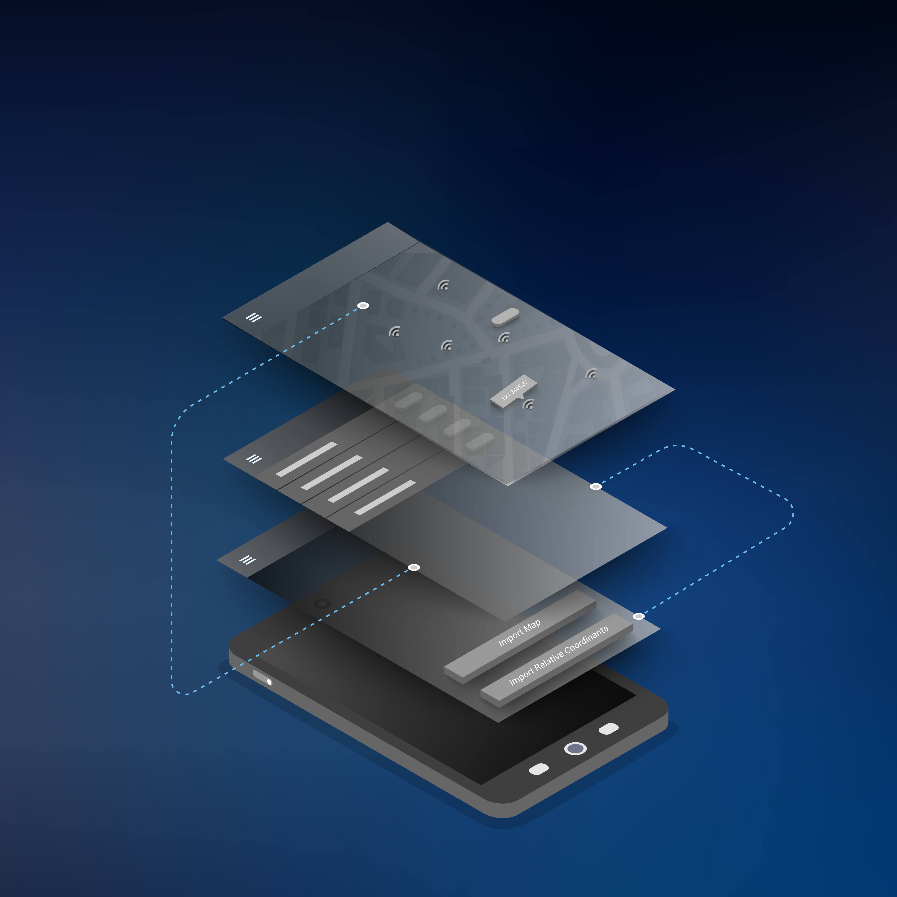
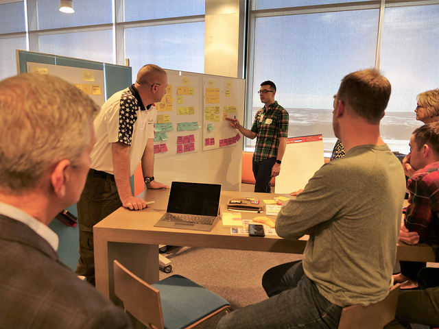
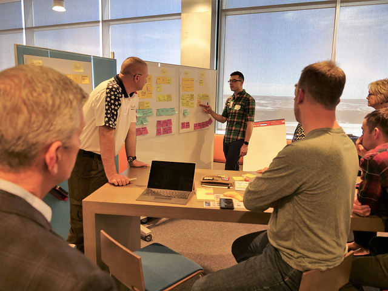

Intro

Design is a universal word that could mean various things. Design could mean architecture, computer platforms, data bases, responsive websites, graphics, and so on. Within my realm the word "design" is used to implement a creative strategy. By focusing on a creative strategy I have managed to branch out to communication design, user experience, user interface, anything that can try to answer a question with a visual solution while keeping the user at the center.
What exactly are the steps to a successful UX process? In most cases you need to plan, discover, explore, define, design, validate, and deliver. Theses steps help keep our focus, goals, and measurable outcomes. Check out my work to view some examples.
Work
Due to the sensative nature of some projects with the Air Force, I am only allowed to show certain pieces.
UX/UI
User research, user experience, rapid prototyping, mobile applications, agile development, and more, are assorted mechanisms that I perform daily.


Design Sprints
A great way to find a solution to a problem are design sprints and design sprints are a common tool among AF CyberWorx. Teams of various individuals, ranging from airmen to industry partners, come together in a dynamic innovation space and use techniques of design process to discover and define the correct problem and solution.
 

AF CyberWorx Brand and Graphics


Excede UX/UI
test test testlksjdf awosidlfjas;lkdfjaedf


About

I obtained my Bachelor of Fine Arts in Communication Design and proceeded to obtain a minor in Geology, which was not required, but I wanted to illustrate how user experience can be implemented in all areas. After graduation I pursued my dreams of becoming a UX/UI designer where I could apply design skills while creating a wonderful experience for users.
I've worked with diversified clients and companies ranging from IT software to independent craftsmen. Currently, my journey has landed me at the United States Air Force Academy in Colorado Springs, Colorado. There I have been able to mentor cadets, who will in turn become officers, apply UX research, methodologies, and focus on human centered design. I have been a part of the growth of AF CyberWorx where I helped develop a brand name, created various design materials, accompanied design sprints with assorted stakeholders, airmen, and civilians. On a daily basis I am able to be a user experience designer and apply developed skills accordingly in an agile environment.
Contact